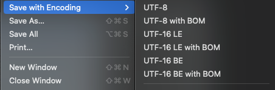
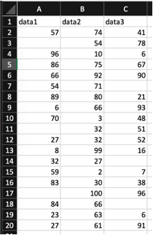
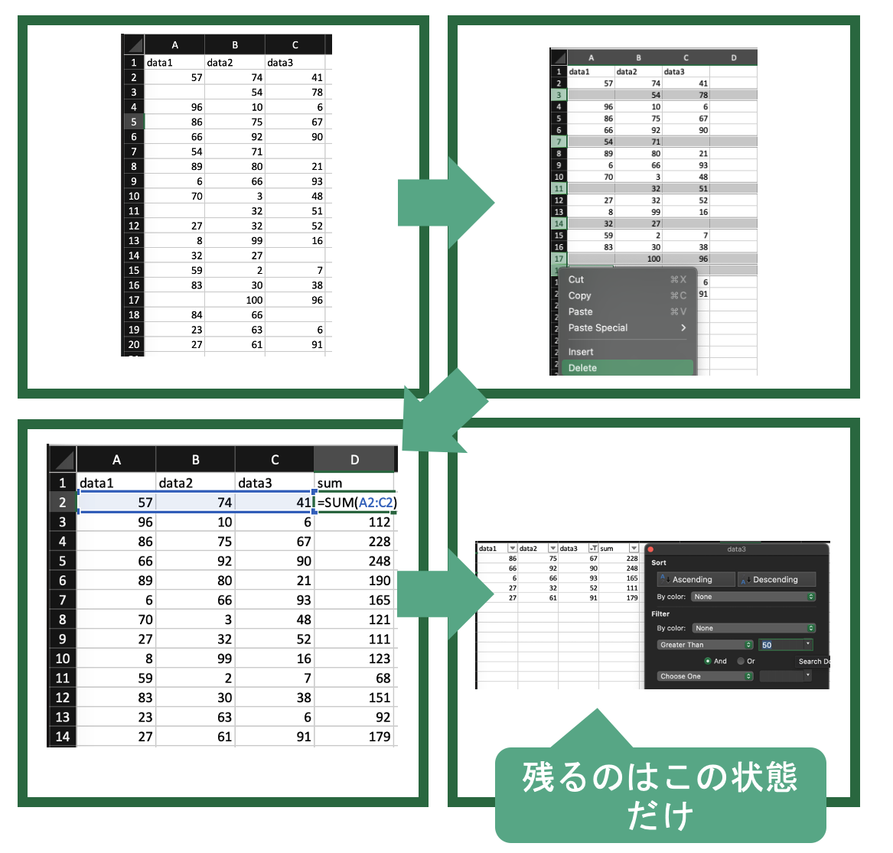

特別講義DS Ch4 ライブラリの利用
1 ライブラリの利用
通常のPythonの学習では,基礎的な演算のあとにFor文やIF分を学びます. しかし,この講義では通常のリストなどよりもむしろPandasとよばれるライブラリの機能を多用します.なので, 先にライブラリの利用法と,Pandasの利用法を学び,それらを事例としてFor文やIF文,関数などの基本的な構文を学習します.
1.1 ライブラリとは
第1回の講義で説明しましたが,プログラムをまとめて他の人がプログラム内で利用できるようにしたものをライブラリといいます. Pythonは,統計,データサイエンス関連のライブラリが充実しているために,利用者が多いということでしたね.
Pythonは様々なライブラリを呼び出して利用するための言語として利用されている側面が大きいです.なので, 目的に応じた様々なライブラリの使用法を知って初めてPythonの力を活用できます.
ライブラリのより細かい概念として, モジュール(Module)とPackage(Package)があります.
Module- 他のプログラムに読み込む(
import)することができるスクリプトファイル
- 他のプログラムに読み込む(
Package- Moduleの名前空間をドットで構造化する手段
Library- 用途に応じてPackageをまとめたもの
importや名前空間の意味は,実際に使っていきながら見ていきましょう.
1.2 ライブラリを使ってみよう
データサイエンスは,名前の通りデータを扱いデータから何かしらの示唆を得るための学問です. データサイエンスにおける分析は概ね以下のように推移します.

それぞれの段階の処理は,基本的には特定のライブラリを利用して行います. したがって,Pythonによるデータ分析の学習では,基本的にそれぞれの段階でのライブラリの利用法を学ぶことが中心になります.それぞれのライブラリの利用法はこれから順次扱いますが,ここでは,第1段階として,データの読み込みに関するライブラリpandasを事例に一般的なライブラリの使用法を体験します.
何かしらのデータを分析するにはプログラムにデータを読み込む必要があります. Pythonにおいてデータの読み書き,整形,編集,生成などを支援する代表的なライブラリに pandasがあります.
ライブラリを利用するためには,まずライブラリを皆さんのコンピュータにインストールする必要があります.
Pythonでライブラリをインストールするにはpipを利用します. pipは,Pythonのインストール時に資料の指示に従ってチェックをつけていれば,既にインストールされているはずです.Shellにpip --versionと入力してバージョンが表示されていれば,インストールされているので確認してみましょう(Macの人はpip3 --version).
> pip --version
pip 24.0 from /Library/Frameworks/Python.framework/Versions/3.10/lib/python3.10/site-packages/pip (python 3.10)pip installのあとに,インストールしたいライブラリ名を入力すると,ライブラリがインストールされます. 今回は pandasをインストールするのでpip install pandasと入力しましょう. 文字が沢山表示されますが, 問題ありません. 画面が止まるまで待ちましょう.
pandasはデータを扱うためのライブラリなので利用するには,何かしらのデータが必要です. 本格的な利用はこのあとでしますが,取り敢えず利用確認用の簡単なデータを作成しましょう.
データはテーブルデータの形式を取ることが多く,pandasで読み込みや書き込みができるテーブルデータとして代表的な形式にCSV(Comma Separated Values)があります.
最近はテーブルデータの高速な処理が可能なPolarsなども流行っていますが,本資料ではPandasに限定します.
また,JSONやXMLなどの他のデータ形式に関しては扱いません.
CSVは,テキストファイルの一種で,その名の通りコンマ(,)で列を区切り,改行で行を区切ることでテーブルを表現します. 標準的なCSVでは最初の1行は,データではなく,各列の中身を表すタイトルとなっておりHeaderと呼びます.2行目以下のデータ部分をBodyと呼びます.
Excelを開いて1行目にWeight,Height,BMIと記入し,それぞれの列に以下のように数値を記入しましょう.BMI列は空欄で構いません.
このファイルをUTF-8のCSVとして保存します. ファイル名はbody_data.csvとしましょう. Excelではファイルの種類でCSV UTF-8 (コンマ区切り)(*.csv)と選択することで保存できます.
このファイルを作業ディレクトリの中に作ったdataという名前のフォルダに保存します.
試しに,body_data.csvをテキストエディタで開くと,中身がコンマと改行で表現されていることが分かります.
Height,Weight,BMI
170,55,
180,72,
155,42,Sublime Textでは FileタブのSave with Encoding内のUTF-8 with BOMで保存し,拡張子を.csvにすることで保存できます.

BOM(Byte Order Mark)について
Unicode(UTF-8, UTF-16など)で文章が記載されていることを示す符号をBOMといい,ファイルの最初に記載されます.
これがついていることで,ソフトウェアでデータを読み込む際に自動的に,適切なエンコーディングが選択されます.
Excelの場合はCSV UTF-8 (コンマ区切り)(*.csv)でBOM付きのUTF-8として保存されますが,日本語環境ではBOMがついていないCSVファイルをShift-JISで開くため,外部ファイルの読み込みから適切なエンコーディングを選ばないと文字化けします.
この知識は後ほどpandasを利用したCSVの保存で再度扱います.
このファイルを読み込んで,pandasの機能をいくつか確認するためのスクリプトを書きます.
テキストエディタでpandas_test.pyという空のファイルを作成し,以下のように記述しましょう.
import pandas as pd
df = pd.read_csv('data/body_data.csv')
print(df)
print(df['Weight'].mean())
print(df['Weight'].median())
df['BMI'] = df['Weight'] / (df['Height']/100) ** 2
print(df)このプログラムを実行すると,以下のように表示されるはずです.
❯ python3 pandas_test.py
Height Weight BMI
0 170 55 NaN
1 180 72 NaN
2 155 42 NaN
56.333333333333336
170.0
Height Weight BMI
0 170 55 19.031142
1 180 72 22.222222
2 155 42 17.481790このプログラムで何をしているのかを簡単に見ていきましょう.
まず一行目のimport pandas as pdですが,import pandasによってこのプログラム内でpandasを利用可能にしています. しかし,pandasと毎回かくのは面倒なので,省略形のpdという名前を定義しています. Pythonではimport [利用したいライブラリ名] as [省略形]
の形で,ライブラリのインポートと省略形の定義を同時に行えます. pandasはdfと省略するのが一般的です.
続いて2行目の df = pd.read_csv('data/body_data.csv')で,先ほど作成した dataフォルダにあるbody_data.csvというファイルを読み込んでいます. df =で読み込んだデータにdfという名前をつけています.
3行目のprint(df)で,読み込んでdfという名前をつかたデータを表示しています. REPLでは,変数を書くだけで表示されていましたが,スクリプトでは標準出力したいものはprint()関数を適用する必要があります.
4,5行目はWeight列の平均(mean)と中央値(median)を求めて表示しています.
6,7行目はもともとのデータで空だった,BMI列を計算し,計算結果を表示しています.
これらの操作の具体的な使い方や意味はこのあと細かく扱いますが,取り敢えず,pandasではこのようにして,データを読み込み,処理することができます.
1.3 なぜExcelではだめなのか
先ほど行った簡単な表計算であれば,Excelでも簡単に同じことができます. では,なぜややこしいPythonなどを学んでプログラムで同じことをするのでしょうか.
まず,第1にPythonを利用することで
機械学習や高度な検定など,Excelではできない高度な処理が可能になります.
先ほど行った簡単な集計であればExcelでも可能ですが,後ほど行う機械学習や自然言語処理などの高度な処理はExcelでは実行が困難です. また, データに関してもExcelでは最大で1,048,576行程度のデータしか扱うことができませんが,(この講義では扱いませんが)データサイエンスでは,それを超えた大容量のデータを扱うことがしばしばあります.
第2の理由として,
Excelが複数の連続した複雑な処理には向いていないということが挙げられます.
Excelでは,何か作業をしても過程が記録されず,結果だけが残ります. また,折角複雑な処理を実行しても,異なるデータなどで同じ処理を行う場合にはゼロから繰り返す必要があり,処理自体を再利用できません(VBAやマクロなどはありますが,それらは結局プログラミングをしているので同じです.)
Excelのこのような特性から,Excelによる複雑な処理の実行は,人間の作業に依存する傾向が強く,ミスの原因となります.
このことについて,以下のデータを事例にもう少し具体的に意味を見ていきましょう.

例としてこのデータに対して以下の3つの処理をすることを考えます.
1. いらない部分を削除する
2. 右側に行和を表す列を足す
3. とある列の値が一定以下のデータを抜き出す
この場合,EXCELでは最後の抜き出したデータだけが残り,中間の段階の処理も,過程も記録されません. したがって,
- 途中で間違っていても気づけない,チェックできない
- 何をしたのかを他の場所にメモして置かなければ分からない,メモも難しい
- 別のデータを使う場合同じ処理をもう一度する必要がある
などの問題がよく起こります.
また,削除の作業などは(これくらいなら自動でもできますが)一つ一つ消していく必要があり大きなデータ(数万行とか)では非常に手間がかかります.
Excelはこのように,処理が人間の記憶や,正確さに依存しています. その結果,ミスの原因となっています.
例えば, こちらの記事(The 7 Biggest Excel Mistakes of All Time)では,過去にExcelの操作ミスで起きた大規模なミスの事例が紹介されています.
- 2008年 バークレイズ・キャピタル
隠していたセルがPDF板では表示されていたことによる数百万ドルの損失が発生.
- 2012年 ロンドン オリンピック
作業員のタイプミスで,10万枚のチケットが払い戻し
- 2012 JPモルガン
Excelのコピペミスにより60億ドルの損失
ちなみにこの記事には載っていませんが,2019年に話題になった,厚生労働省の毎月勤労統計における不正問題もExcelのミスが原因の一つです.
一方プログラムでは,これらの問題が解決可能です.
先程のExcelの作業と同じ例で考えてみましょう. 以下のコードは先程のExcelで行った作業を実行しています.
import pandas as pd
#データの読み込み
df = pd.read_csv('sample.csv')
#いらない部分を削除する
df.dropna(axis='index',how='any',inplace=True)
#右側に行和を追加する
df['sum'] = df.sum(axis=1)
#data3が50以下の行を消す
df = df[df['data3']>50]
#確認
print(df)実行結果は当然Excelで行ったものと同じです.
> python sample.py
data1 data2 data3 sum
3 86.0 75 67.0 228.0
4 66.0 92 90.0 248.0
7 6.0 66 93.0 165.0
10 27.0 32 52.0 111.0
18 27.0 61 91.0 179.0しかし, Excelと異なりこのプログラムを実行しても元データは変わっていないため,元の状態にいつでも戻ることが可能です. 更に何を行ったかの処理がプログラムとして残っているため,途中で間違いがないかのチェックや修正が可能です. (本講義では扱いませんが, 実際にはプログラムでもミスは絶対におきます.そのためテストを実施するのですが,人間の行うチェックリストなどのテストよりもプログラムで行うテストの方が信頼性が高いのも利点です.)
また, プログラムがそのまま作業メモになっているので,他人に何を行ったかの説明が可能です. 加えて,このプログラムを再利用することで,異なるデータで同じ作業をする場合に再利用することが可能です. また,実際の処理はすべてプログラムが自動で行うため作業の手間がデータの容量にかかわらず一定です.
確かに,これまでに皆さんが講義で習ってきたような内容であれば,Excelのほうが学習コストが低く手軽に行えます. しかし,今後行うような統計処理やデータサイエンスなど,処理が複雑になればなるほど,プログラムで処理するメリットが大きくなります.